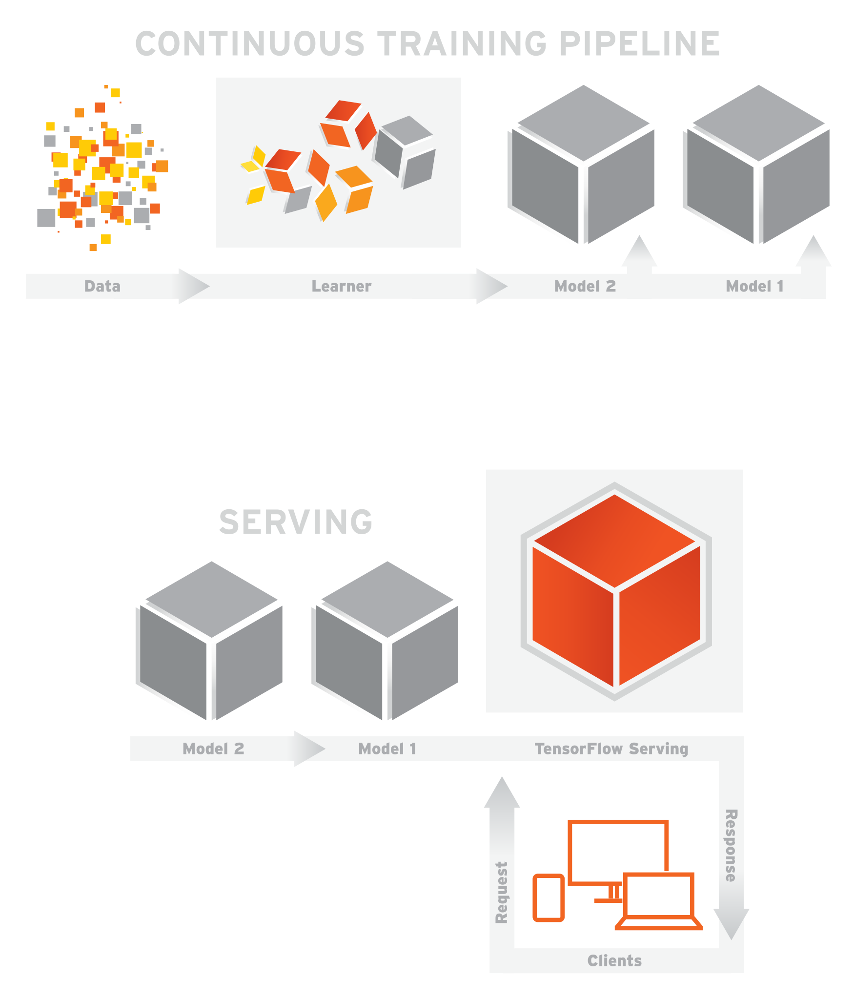

Machine Learning with TensorFlow
Lecture 1
TensorFlow Serving
Using These Slides
↓, PgDn, n, j |
next slide |
↑, PgUp, p, k |
prev slide |
Esc |
global ctrl+f |
TensorFlow Serving
Some new words:
- Servables
- Loaders
- Sources
- Managers
- Core
Servables
Servables
They are the primary interface to the client.
They have version numbers!
Loaders
Manage servable's life cycle
User does not interface with it
Sources
Sources
Supplies a Loader
e.g. poll a file system
Manager
Manager
- load Servables
- serve Servables
- unload Servables

Install TensorFlow Serving
See official installation instructions
- Install Bazel
- Install gRPC
- Install remaining dependencies
- Install from source
Install Bazel
Pretty easy on Ubuntu:
$ echo "deb [arch=amd64] http://storage.googleapis.com/bazel-apt stable jdk1.8" | sudo tee /etc/apt/sources.list.d/bazel.list
$ curl https://bazel.build/bazel-release.pub.gpg | \
sudo apt-key add-
$ sudo apt-get update && sudo apt-get install bazel
$ sudo apt-get upgrade bazel
Install gRPC
$ pip install grpcio
Install other dependencies
$ sudo apt-get update && sudo apt-get install -y \
build-essential \
curl \
libcurl3-dev \
git \
libfreetype6-dev \
libpng12-dev \
libzmq3-dev \
pkg-config \
python-dev \
python-numpy \
python-pip \
software-properties-common \
swig \
zip \
zlib1g-dev
Install TensorFlow Serving
$ git clone --recurse-submodules \
https://github.com/tensorflow/serving
$ cd serving/tensorflow
$ virtualenv --system-site-packages \
-p python3 ~/tensorflow-serving
$ source ~/tensorflow-serving/bin/activate
$ ./configure
$ cd ..
Build TensorFlow Serving
Will take longer than 10 minutes...
$ bazel build tensorflow_serving/...
Did it work?
$ bazel test tensorflow_serving/...
When your test cases pass...
$ bazel build //tensorflow_serving/example:mnist_saved_model
$ bazel-bin/tensorflow_serving/example/mnist_saved_model \
/tmp/mnist_model
Run the Model Server
$ bazel build \
//tensorflow_serving/model_servers:tensorflow_model_server
$ bazel-bin/tensorflow_serving/model_servers/tensorflow_model_server \
--port=9000 \
--model_name=mnist \
--model_base_path=/tmp/mnist_model/
Test it out
$ bazel build //tensorflow_serving/example:mnist_client
$ bazel-bin/tensorflow_serving/example/mnist_client \
--num_tests=1000 --server=localhost:9000
(in case your get an ImportError: pip2 install grpcio)
Image attributions